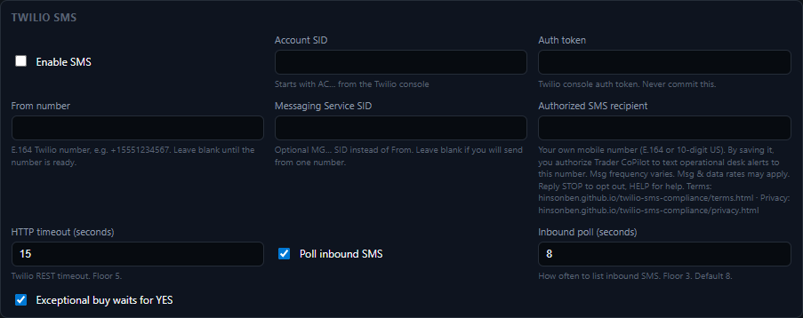

Effective Date: September 25, 2026
Trader CoPilot uses SMS exclusively for operational desk alerts sent to the Trader CoPilot account owner/operator. This page describes how the recipient authorizes SMS messages.
The sole intended recipient of Trader CoPilot SMS messages is the account owner/operator of the Trader CoPilot application. Trader CoPilot does not send SMS messages to customers, prospects, the general public, or any third party.
The account owner/operator explicitly authorizes their own personal mobile number by configuring it as the authorized SMS recipient in the Trader CoPilot application. By entering and saving that number as the authorized SMS recipient, the account owner/operator consents to receive Trader CoPilot operational desk alerts at that number.
The account owner/operator authorizes SMS on the Settings → Twilio SMS screen of the Trader CoPilot desk application (shown on screen as "TradingCopilot"). The owner enters their own mobile number in the Authorized SMS recipient field and saves it. The consent terms appear directly beneath the field:
Your own mobile number (E.164 or 10-digit US). By saving it, you authorize Trader CoPilot to text operational desk alerts to this number. Msg frequency varies. Msg & data rates may apply. Reply STOP to opt out, HELP for help. Terms: hinsonben.github.io/twilio-sms-compliance/terms.html · Privacy: hinsonben.github.io/twilio-sms-compliance/privacy.html

Messages are limited to operational desk alerts generated by the Trader CoPilot application, such as application status and monitoring notifications. SMS is not used for marketing, promotions, customer solicitation, order placement, or transactions.
The authorized recipient may reply by text to request a status report, and Trader CoPilot confirms the request by text. Text replies cannot place, approve, or cancel trades or orders.
The account owner/operator may revoke SMS authorization at any time by replying STOP or by removing the number as the authorized SMS recipient in the Trader CoPilot application. To change the receiving number, the account owner/operator updates the authorized SMS recipient in the application.
Mobile numbers and SMS opt-in/consent information are not sold, rented, or shared with third parties or affiliates for their own marketing purposes. See the Privacy Policy and Terms & Conditions for more information.